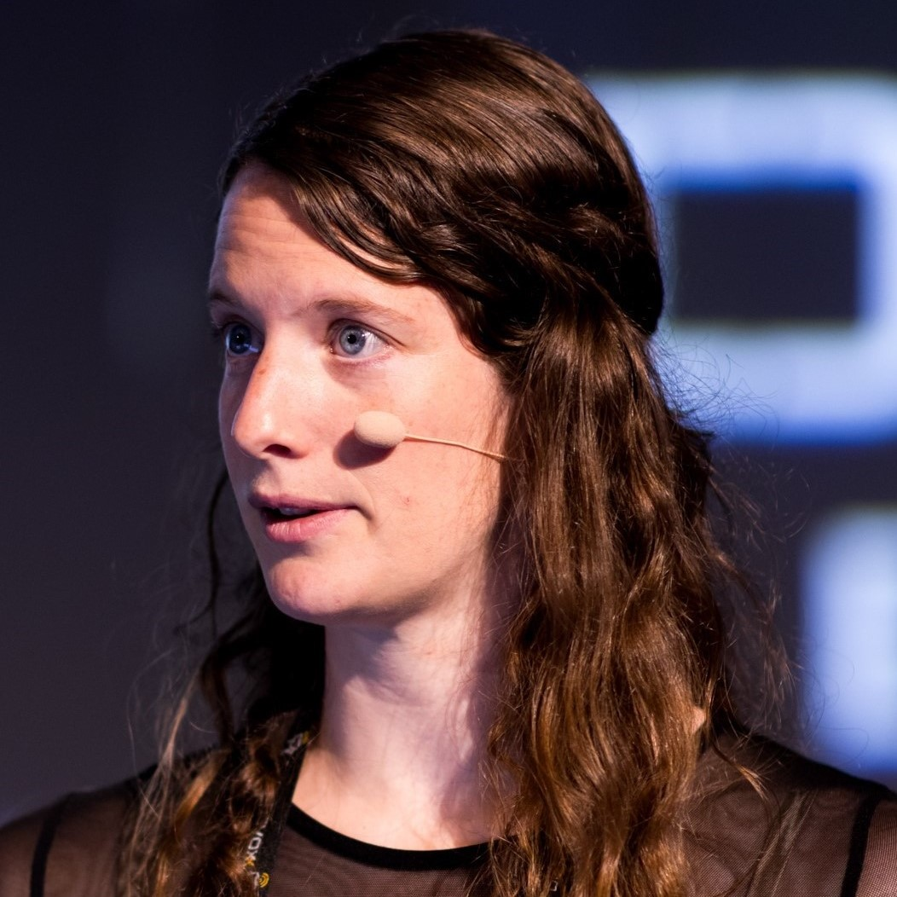

Watch On-demand
Available after March 27, 9:00 AM PST
RSVP Now
Agenda
Speakers
Barkha Herman
Developer Advocate, Technologist, Podcaster, WiT Advocate and mentor
I'm a technology veteran with over 30 years of experience in the industry. Throughout my career, I have been an enthusiastic advocate for emerging technologies and their potential to transform lives. In addition to my extensive technical knowledge, I am also skilled in strategic thinking, product development, and organizational leadership.
Brian Spendolini
Sr. Product Manager, Microsoft
Brian is a Senior Product Manager at Microsoft, with a concentration in databases and cloud services resulting in the ability to architect, maintain, and successfully deploy large enterprise grade applications and reporting platforms.
Carlos Gauto
Project Leader, Mercado Libre
Charly is an IT Project Leader with more than 17 years of experience, he worked as QA Automation Manager leading services in LATAM and USA. He is also a speaker, Playwright Ambassador, K6 Champion, BrowserStack Champion and Test Automation related content creator.
Dan Haywood
Consultant, Haywood Associates Ltd.
Dan Haywood is an independent consultant most known for his work on domain-driven design and the naked objects pattern. He is a committer on Apache Causeway, a Spring Boot-based framework for building line-of-business applications, and also an ASF member.
Emily Jiang
Cloud Native Architect and Chief Advocate at IBM
Emily Jiang is a Java Champion. She is Liberty Cloud Native Architect and Chief Advocate, Senior Technical Staff Member (STSM) in IBM, based at Hursley Lab in the UK. Emily is a MicroProfile guru and has been working on MicroProfile since 2016 and leads a number of specifications including MicroProfile Config and Fault Tolerance. She interacts with most of the other MicroProfile specifications. She is also active in Jakarta EE specifications. She is a co-lead in Jakarta Config and also a Jakarta Context and Dependency Injection (CDI) committer. At IBM, she leads the effort of implementing all of MicroProfile specifications on Open Liberty.

Lize Raes
Software Engineer at Open Tide
Lize Raes is a Senior Software Engineer and Head of AI at a Swiss company specializing in software for drug discovery and gene technology. In parallel, she develops LLM-powered apps and is a core member of the LangChain4j team. Lize loves using technology to solve societal issues. This has driven her in the past to work as a cochlear implant researcher at Ghent University, to develop a COVID-19 prognosis model and advise the Belgian government, and to engage as a committee member for the CNCF + UN hackathon. In her free time, you will find her behind the piano or in her woodworking atelier.
Mark Swatosh
Software Engineer at IBM
Mark Swatosh has worked as a software developer in the enterprise Java space for over a decade. He is a software developer at IBM working on Open Liberty, and a Jakarta EE committer for the Jakarta Data and Jakarta Concurrency projects. He is also a fan of energy efficient building, living in a Net-Zero home he designed with his wife.

Martin Lippert
Spring Tools Lead, VMware / Broadcom
Martin works at VMware on developer tooling for the Spring and Spring Boot. He co-leads the team that ships all the Spring Tools for Eclipse, Visual Studio Code, Theia, and more.
Mary Grygleski
Senior Developer Advocate at DataStax
Mary is a Java Champion and a passionate Senior Developer Advocate at DataStax, a leading data management company that champions Open Source software and specializes in Big Data, DB-as-a-service, Streaming, and Cloud-Native systems. She spent 3.5 years as a very effective advocate at IBM, focusing on Java, Jakarta EE, OpenJ9, Open Source, Cloud, and Distributed Systems. She transitioned from Unix/C to Java around 2000 and has never looked back since then. She considers herself a polyglot and loves to continue learning new and better ways to solve real-life problems. She is an active tech community builder outside of her day job, and currently the President of the Chicago Java Users Group (CJUG), as well as a co-organizer for several IBM-sponsored meetup groups in the Greater Chicago area.
Nagarjuna Vipparthi
Senior Product Manager, Developer Division, Microsoft
Nagarjuna is a Senior Product Manager in Microsoft Developer Division, focusing on Azure Load Testing. He has a decade of experience spanning product management, automation testing, machine learning and web application development.
Otavio Santana
Software Engineer & Architect and Open Source Committer, Otaviojava
Otavio, a passionate cloud and Java expert, empowers software engineers with open-source best practices for highly scalable, efficient software. He's a renowned contributor to the Java and open-source ecosystems, receiving numerous awards and accolades. Otavio's interests include history, economy, travel, and fluency in multiple languages, all seasoned with a sense of humor.
Patrick Baumgartner
Software Crafter at 42talents
Patrick Baumgartner works as a passionate software crafter, coach, and trainer at 42talents. He works with people to create beautiful and simple solutions and enjoys building software for the cloud with Java, the Spring ecosystem, OSGi, Neo4j and ElasticSearch and other open-source technologies.

Reza Rahman
Principal Program Manager, Java on Azure at Microsoft
Reza Rahman is Principal Program Manager for Java on Azure at Microsoft. He works to make sure Java developers are first class citizens at Microsoft and Microsoft is a first class citizen of the Java ecosystem. Reza has been an official Java technologist at Oracle. He is the author of the popular book EJB 3 in Action from Manning Publishing. Reza has long been a frequent speaker at Java User Groups and conferences worldwide including JavaOne and Devoxx. He has been the lead for the Java EE track at JavaOne as well as a JavaOne Rock Star Speaker award recipient. He was the program chair for the inaugural JakartaOne conference. Reza is an avid contributor to industry journals like JavaLobby/DZone and TheServerSide. He has been a member of the Java EE, EJB and JMS expert groups over the years. Reza implemented the EJB container for the Resin open source Java EE application server. He helps lead the Philadelphia Java User Group.
Sami Ekblad
Developer Experience Lead, Vaadin
Sami is an original team member from Vaadin. With the mission of "empowering developers to build cool things", he is an experienced web application developer. He has built web applications and reusable components for web development for Vaadin and other web frameworks. Taking software where it has not existed before, the current hobby is a hardware project for his sailing boat and using the MQTT as the backend.

Timo Salm
Timo Salm at Tanzu by Broadcom
Timo Salm is the first Solution Engineer for Developer Experience at Tanzu by Broadcom in EMEA, focusing on internal developer platforms and commercial Spring products. In this role, he's responsible for educating customers on the value of these products and ensuring that they succeed by working closely on different levels of abstractions of modern applications and modern infrastructure.

YK Chang
Architect & Developer Advocate, IBM
Yee-Kang (YK) Chang is an architect and developer advocate on the IBM's Java application platform team. He works on Open Liberty and contributes to various OSS projects like Eclipse LSP4Jakarta and LSP4MP. YK is keen on how we can make life easier and better for developers.
Stay connected
Follow the Microsoft for Java developers blog and Java at Microsoft for the latest news and updates about JDConf.
Follow the event at #JDConf